Adaptive Research Modeling · 2026
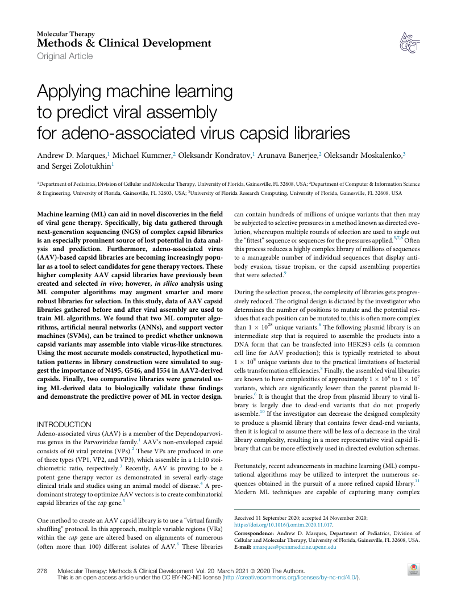
Original Article
Applying machine learning
to predict viral assembly
for adeno-associated virus capsid libraries
Andrew D. Marques,1 Michael Kummer,2 Oleksandr Kondratov,1 Arunava Banerjee,2 Oleksandr Moskalenko,3 and Sergei Zolotukhin1
1DepartmentofPediatrics,DivisionofCellularandMolecularTherapy,UniversityofFlorida,Gainesville,FL32608,USA;2DepartmentofComputer&InformationScience &Engineering,UniversityofFlorida,Gainesville,FL32603,USA;3UniversityofFloridaResearchComputing,UniversityofFlorida,Gainesville,FL32608,USA
Machinelearning(ML)canaidinnoveldiscoveriesinthefield cancontain hundreds ofmillionsofunique variantsthat thenmay of viral gene therapy. Specifically, big data gathered through besubjectedtoselectivepressuresinamethodknownasdirectedevo- next-generationsequencing(NGS)ofcomplexcapsidlibraries lution,whereuponmultipleroundsofselectionareusedtosingleout isanespeciallyprominentsourceoflostpotentialindataanal- the“fittest”sequenceorsequencesforthepressuresapplied.5,7,8Often ysis and prediction. Furthermore, adeno-associated virus thisprocessreducesahighlycomplexlibraryofmillionsofsequences (AAV)-basedcapsidlibrariesarebecomingincreasinglypopu- to a manageable number of individual sequences that display anti- larasatooltoselectcandidatesforgenetherapyvectors.These body evasion, tissue tropism, or the capsid assembling properties higher complexity AAV capsid libraries have previously been thatwereselected.9 created and selected in vivo; however, in silico analysis using ML computer algorithms may augment smarter and more Duringtheselectionprocess,thecomplexityoflibrariesgetsprogres- robustlibrariesforselection.Inthisstudy,dataofAAVcapsid sivelyreduced.Theoriginaldesignisdictatedbytheinvestigatorwho libraries gathered before and after viral assembly are used to determinesthenumberofpositionstomutateandthepotentialres- train ML algorithms. We found that two ML computer algo- iduesthateachpositioncanbemutatedto;thisisoftenmorecomplex rithms,artificialneuralnetworks(ANNs),andsupportvector than1(cid:1)1028uniquevariants.6Thefollowingplasmidlibraryisan machines(SVMs),canbetrainedtopredictwhetherunknown intermediate step that is required to assemble the products into a capsidvariantsmayassembleintoviablevirus-likestructures. DNA form that can be transfected into HEK293 cells (a common Usingthemostaccuratemodelsconstructed,hypotheticalmu- cell line for AAV production); this is typically restricted to about tationpatternsinlibraryconstructionweresimulatedtosug- 1(cid:1)108uniquevariantsduetothepracticallimitationsofbacterial gesttheimportanceofN495,G546,andI554inAAV2-derived cellstransformationefficiencies.8Finally,theassembledvirallibraries capsids. Finally,twocomparativelibrariesweregeneratedus- areknowntohavecomplexitiesofapproximately1(cid:1)106to1(cid:1)107 ing ML-derived data to biologically validate these findings variants, which are significantly lower than the parent plasmid li- anddemonstratethepredictivepowerofMLinvectordesign. braries.6Itisthoughtthatthedropfromplasmidlibrarytoviralli- brary is largely due to dead-end variants that do not properly assemble.10Iftheinvestigatorcandecreasethedesignedcomplexity INTRODUCTION toproduceaplasmidlibrarythatcontainsfewerdead-endvariants, thenitislogicaltoassumetherewillbelessofadecreaseintheviral Adeno-associatedvirus(AAV)isamemberoftheDependoparvovi- rusgenusintheParvoviridaefamily.1AAV’snon-envelopedcapsid librarycomplexity,resultinginamorerepresentativeviralcapsidli- consistsof60viralproteins(VPs).2TheseVPsareproducedinone brarythatcanbemoreeffectivelyusedindirectedevolutionschemas. ofthreetypes(VP1,VP2,andVP3),whichassembleina1:1:10stoi- chiometric ratio, respectively.3 Recently, AAV is proving to be a Fortunately,recentadvancementsinmachinelearning(ML)compu- tational algorithms may be utilized to interpret the numerous se- potent gene therapy vector as demonstrated in several early-stage clinicaltrialsandstudiesusingananimalmodelofdisease.4Apre- quences obtained in the pursuit of a more refined capsid library.11 Modern ML techniques are capable of capturing many complex dominantstrategytooptimizeAAVvectorsistocreatecombinatorial capsidlibrariesofthecapgene.5 OnemethodtocreateanAAVcapsidlibraryistousea“virtualfamily Received11September2020;accepted24November2020; https://doi.org/10.1016/j.omtm.2020.11.017. shuffling”protocol.Inthisapproach,multiplevariableregions(VRs) Correspondence: Andrew D. Marques, Department of Pediatrics, Division of within the cap gene are altered based on alignments of numerous CellularandMolecularTherapy,UniversityofFlorida,Gainesville,FL32608,USA. (often more than 100) different isolates of AAV.6 These libraries E-mail:amarques@pennmedicine.upenn.edu 276 MolecularTherapy:Methods&ClinicalDevelopment Vol.20 March2021ª2020TheAuthors. ThisisanopenaccessarticleundertheCCBY-NC-NDlicense(http://creativecommons.org/licenses/by-nc-nd/4.0/).
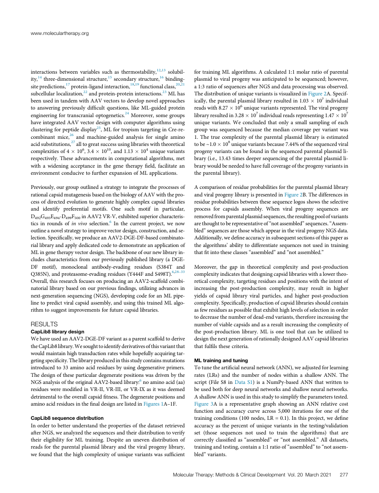
www.moleculartherapy.org
interactions between variables such as thermostability,12,13 solubil- fortrainingMLalgorithms.Acalculated1:1molarratioofparental ity,14three-dimensionalstructure,15secondarystructure,16binding- plasmidtoviralprogenywasanticipatedtobesequenced;however, sitepredictions,17protein-ligandinteraction,18,19functionalclass,20,21 a1:3ratioofsequencesafterNGSanddataprocessingwasobserved. subcellularlocalization,22andprotein-proteininteractions.23MLhas ThedistributionofuniquevariantsisvisualizedinFigure2A.Specif- beenusedintandemwithAAVvectorstodevelopnovelapproaches ically,theparentalplasmidlibraryresultedin1.03(cid:1)107individual to answering previously difficult questions, like ML-guided protein readswith8.27(cid:1)106uniquevariantsrepresented.Theviralprogeny engineeringfortranscranialoptogenetics.24Moreover,somegroups libraryresultedin3.28(cid:1)107individualreadsrepresenting1.47(cid:1)107 haveintegratedAAVvectordesignwithcomputeralgorithmsusing unique variants. We concluded that only a small sampling of each clusteringforpeptidedisplay25,MLfortropismtargetinginCre-re- group wassequenced because the mediancoverage per variant was combinant mice,26 and machine-guided analysis for single amino 1. The true complexity of the parental plasmid library is estimated acidsubstitutions,27alltogreatsuccessusinglibrarieswiththeoretical tobe~1.0(cid:1)108uniquevariantsbecause7.44%ofthesequencedviral complexitiesof4(cid:1)106,3.4(cid:1)1010,and1.13(cid:1)104uniquevariants progenyvariantscanbefoundinthesequencedparentalplasmidli- respectively.Theseadvancementsincomputationalalgorithms,met brary(i.e.,13.43timesdeepersequencingoftheparentalplasmidli- with a widening acceptance in the gene therapy field, facilitate an brarywouldbeneededtohavefullcoverageoftheprogenyvariantsin environmentconducivetofurtherexpansionofMLapplications. theparentallibrary). Previously,ourgroupoutlinedastrategytointegratetheprocessesof Acomparisonofresidueprobabilitiesfortheparentalplasmidlibrary rationalcapsidmutagenesisbasedonthebiologyofAAVwiththepro- andviralprogenylibraryispresentedinFigure2B.Thedifferencesin cessofdirectedevolutiontogeneratehighlycomplexcapsidlibraries residueprobabilitiesbetweenthesesequencelogosshowstheselective and identify preferential motifs. One such motif in particular, process for capsids assembly. When viral progeny sequences are D G E -D F inAAV2VR-V,exhibitedsuperiorcharacteris- removedfromparentalplasmidsequences,theresultingpoolofvariants 492 493 494 499 500 tics in rounds of in vivo selection.6 In the current project, we now arethoughttoberepresentativeof“notassembled”sequences.“Assem- outlineanovelstrategytoimprovevectordesign,construction,andse- bled”sequencesarethosewhichappearintheviralprogenyNGSdata. lection.Specifically,weproduceanAAV2-DGE-DF-basedcombinato- Additionally,wedefineaccuracyinsubsequentsectionsofthispaperas riallibraryandapplydedicatedcodetodemonstrateanapplicationof thealgorithms’abilitytodifferentiatesequencesnotusedintraining MLingenetherapyvectordesign.Thebackboneofournewlibraryin- thatfitintotheseclasses“assembled”and“notassembled.” cludescharacteristicsfromourpreviouslypublishedlibrary(aDGE- DF motif), monoclonal antibody-evading residues (S384T and Moreover, the gap in theoretical complexity and post-production Q385N),andproteasome-evadingresidues(Y444FandS498T).6,28–33 complexityindicatesthatdesigningcapsidlibrarieswithalowertheo- Overall,thisresearchfocusesonproducinganAAV2-scaffoldcombi- reticalcomplexity,targetingresiduesandpositionswiththeintentof natoriallibrarybasedonourpreviousfindings,utilizingadvancesin increasing the post-production complexity, may result in higher next-generationsequencing(NGS),developingcodeforanMLpipe- yields of capsid library viral particles, and higher post-production linetopredictviralcapsidassembly,andusingthistrainedMLalgo- complexity.Specifically,productionofcapsidlibrariesshouldcontain rithmtosuggestimprovementsforfuturecapsidlibraries. asfewresiduesaspossiblethatexhibithighlevelsofselectioninorder todecreasethenumberofdead-endvariants,thereforeincreasingthe RESULTS numberofviablecapsidsandasaresultincreasingthecomplexityof CapLib8librarydesign the post-production library. ML is one tool that can be utilized to WehaveusedanAAV2-DGE-DFvariantasaparentscaffoldtoderive designthenextgenerationofrationallydesignedAAVcapsidlibraries theCapLib8library.Wesoughttoidentifyderivativesofthisvariantthat thatfulfilsthesecriteria. wouldmaintainhightransductionrateswhilehopefullyacquiringtar- getingspecificity.Thelibraryproducedinthisstudycontainsmutations MLtrainingandtuning introducedto33aminoacidresiduesbyusingdegenerativeprimers. Totunetheartificialneuralnetwork(ANN),weadjustedforlearning Thedesignoftheseparticulardegeneratepositionswasdrivenbythe rates (LRs) and the number of nodes within a shallow ANN. The NGSanalysisoftheoriginalAAV2-basedlibrary:6noaminoacid(aa) script (File S8 in Data S1) is a NumPy-based ANN that written to residuesweremodifiedinVR-II,VR-III,orVR-IXasitwasdeemed beusedbothfordeepneuralnetworksandshallowneuralnetworks. detrimentaltotheoverallcapsidfitness.Thedegeneratepositionsand AshallowANNisusedinthisstudytosimplifytheparameterstested. aminoacidresiduesinthefinaldesignarelistedinFigures1A–1F. Figure 3A is a representative graph showing an ANN relative cost function and accuracy curve across 5,000 iterations for one of the CapLib8sequencedistribution trainingconditions(100nodes,LR=0.1).Inthisproject,wedefine Inordertobetterunderstandthepropertiesofthedatasetretrieved accuracy as the percent of unique variants in the testing/validation afterNGS,weanalyzedthesequencesandtheirdistributiontoverify set (those sequences not used to train the algorithms) that are their eligibility for ML training. Despite an uneven distribution of correctly classified as “assembled” or “not assembled.” All datasets, readsfortheparentalplasmidlibraryandtheviralprogenylibrary, trainingandtesting,containa1:1ratioof“assembled”to“notassem- wefoundthatthehighcomplexityofuniquevariantswassufficient bled”variants. MolecularTherapy:Methods&ClinicalDevelopment Vol.20 March2021 277
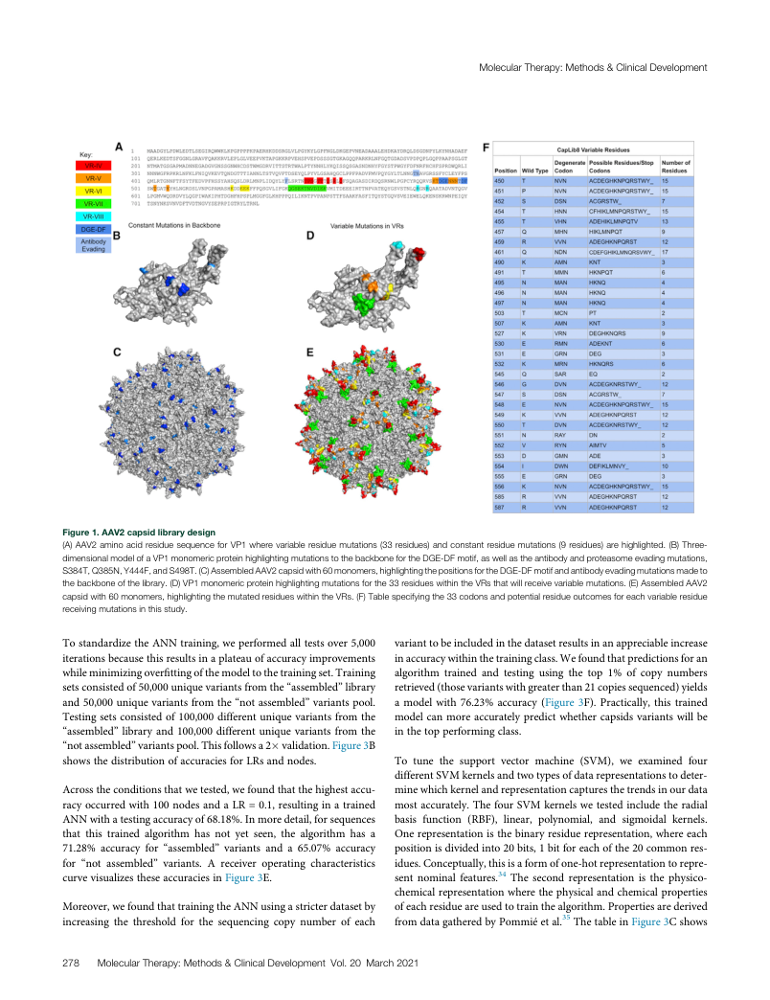
MolecularTherapy:Methods&ClinicalDevelopment
Figure1.AAV2capsidlibrarydesign (A)AAV2aminoacidresiduesequenceforVP1wherevariableresiduemutations(33residues)andconstantresiduemutations(9residues)arehighlighted.(B)Three- dimensionalmodelofaVP1monomericproteinhighlightingmutationstothebackbonefortheDGE-DFmotif,aswellastheantibodyandproteasomeevadingmutations, S384T,Q385N,Y444F,andS498T.(C)AssembledAAV2capsidwith60monomers,highlightingthepositionsfortheDGE-DFmotifandantibodyevadingmutationsmadeto thebackboneofthelibrary.(D)VP1monomericproteinhighlightingmutationsforthe33residueswithintheVRsthatwillreceivevariablemutations.(E)AssembledAAV2 capsidwith60monomers,highlightingthemutatedresidueswithintheVRs.(F)Tablespecifyingthe33codonsandpotentialresidueoutcomesforeachvariableresidue receivingmutationsinthisstudy. TostandardizetheANNtraining,weperformedalltestsover5,000 varianttobeincludedinthedatasetresultsinanappreciableincrease iterationsbecausethisresultsinaplateauofaccuracyimprovements inaccuracywithinthetrainingclass.Wefoundthatpredictionsforan whileminimizingoverfittingofthemodeltothetrainingset.Training algorithm trained and testing using the top 1% of copy numbers setsconsistedof50,000uniquevariantsfromthe“assembled”library retrieved(thosevariantswithgreaterthan21copiessequenced)yields and50,000uniquevariantsfromthe“notassembled”variantspool. a model with 76.23% accuracy (Figure 3F). Practically, this trained Testingsetsconsistedof100,000differentuniquevariantsfromthe modelcanmoreaccuratelypredictwhethercapsidsvariantswillbe “assembled”library and 100,000 different unique variants fromthe inthetopperformingclass. “notassembled”variantspool.Thisfollowsa2(cid:1)validation.Figure3B showsthedistributionofaccuraciesforLRsandnodes. To tune the support vector machine (SVM), we examined four differentSVMkernelsandtwotypesofdatarepresentationstodeter- Acrosstheconditionsthatwetested,wefoundthatthehighestaccu- minewhichkernelandrepresentationcapturesthetrendsinourdata racyoccurredwith100nodesandaLR=0.1,resultinginatrained mostaccurately.ThefourSVMkernelswetestedincludetheradial ANNwithatestingaccuracyof68.18%.Inmoredetail,forsequences basis function (RBF), linear, polynomial, and sigmoidal kernels. that this trained algorithm has not yet seen, the algorithm has a Onerepresentationisthebinaryresiduerepresentation,whereeach 71.28% accuracy for “assembled” variants and a 65.07% accuracy positionisdividedinto20bits,1bitforeachofthe20commonres- for “not assembled” variants. A receiver operating characteristics idues.Conceptually,thisisaformofone-hotrepresentationtorepre- curvevisualizestheseaccuraciesinFigure3E. sent nominal features.34 The second representation is the physico- chemicalrepresentationwherethephysicalandchemicalproperties Moreover,wefoundthattrainingtheANNusingastricterdatasetby ofeachresidueareusedtotrainthealgorithm.Propertiesarederived increasing the threshold for the sequencing copy number of each fromdatagatheredbyPommiéetal.35ThetableinFigure3Cshows 278 MolecularTherapy:Methods&ClinicalDevelopment Vol.20 March2021
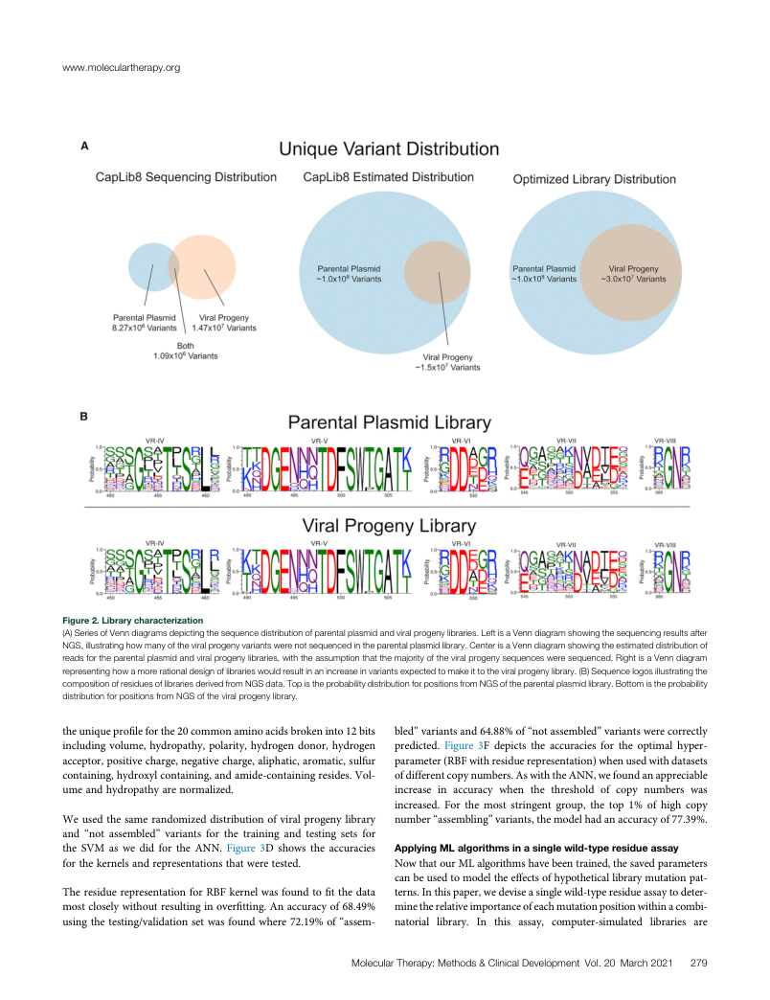
www.moleculartherapy.org
Figure2.Librarycharacterization (A)SeriesofVenndiagramsdepictingthesequencedistributionofparentalplasmidandviralprogenylibraries.LeftisaVenndiagramshowingthesequencingresultsafter NGS,illustratinghowmanyoftheviralprogenyvariantswerenotsequencedintheparentalplasmidlibrary.CenterisaVenndiagramshowingtheestimateddistributionof readsfortheparentalplasmidandviralprogenylibraries,withtheassumptionthatthemajorityoftheviralprogenysequencesweresequenced.RightisaVenndiagram representinghowamorerationaldesignoflibrarieswouldresultinanincreaseinvariantsexpectedtomakeittotheviralprogenylibrary.(B)Sequencelogosillustratingthe compositionofresiduesoflibrariesderivedfromNGSdata.TopistheprobabilitydistributionforpositionsfromNGSoftheparentalplasmidlibrary.Bottomistheprobability distributionforpositionsfromNGSoftheviralprogenylibrary. theuniqueprofileforthe20commonaminoacidsbrokeninto12bits bled”variantsand64.88%of“notassembled”variantswerecorrectly including volume, hydropathy, polarity,hydrogen donor, hydrogen predicted. Figure 3F depicts the accuracies for the optimal hyper- acceptor,positivecharge,negativecharge,aliphatic,aromatic,sulfur parameter(RBFwithresiduerepresentation)whenusedwithdatasets containing,hydroxylcontaining,andamide-containingresides.Vol- ofdifferentcopynumbers.AswiththeANN,wefoundanappreciable umeandhydropathyarenormalized. increase in accuracy when the threshold of copy numbers was increased. For the most stringent group, the top 1% of high copy Weusedthesamerandomizeddistributionofviralprogenylibrary number“assembling”variants,themodelhadanaccuracyof77.39%. and “not assembled” variants for the training and testing sets for the SVM as we did for the ANN. Figure 3D shows the accuracies ApplyingMLalgorithmsinasinglewild-typeresidueassay forthekernelsandrepresentationsthatweretested. NowthatourMLalgorithmshavebeentrained,thesavedparameters canbeusedtomodeltheeffectsofhypotheticallibrarymutationpat- TheresiduerepresentationforRBFkernelwasfoundtofitthedata terns.Inthispaper,wedeviseasinglewild-typeresidueassaytodeter- mostcloselywithoutresultinginoverfitting.Anaccuracyof68.49% minetherelativeimportanceofeachmutationpositionwithinacombi- usingthetesting/validationsetwasfoundwhere72.19%of“assem- natorial library. In this assay, computer-simulated libraries are MolecularTherapy:Methods&ClinicalDevelopment Vol.20 March2021 279
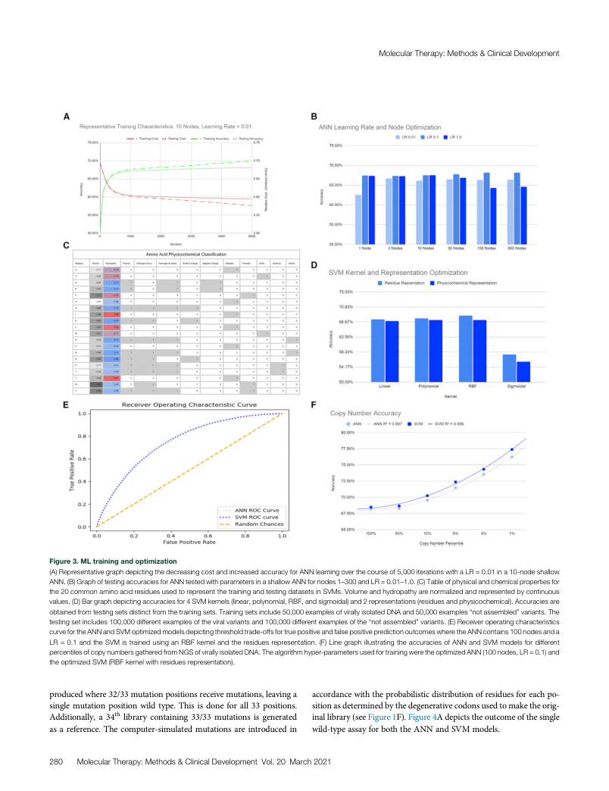
MolecularTherapy:Methods&ClinicalDevelopment
Figure3.MLtrainingandoptimization (A)RepresentativegraphdepictingthedecreasingcostandincreasedaccuracyforANNlearningoverthecourseof5,000iterationswithaLR=0.01ina10-nodeshallow ANN.(B)GraphoftestingaccuraciesforANNtestedwithparametersinashallowANNfornodes1–300andLR=0.01–1.0.(C)Tableofphysicalandchemicalpropertiesfor the20commonaminoacidresiduesusedtorepresentthetrainingandtestingdatasetsinSVMs.Volumeandhydropathyarenormalizedandrepresentedbycontinuous values.(D)Bargraphdepictingaccuraciesfor4SVMkernels(linear,polynomial,RBF,andsigmoidal)and2representations(residuesandphysicochemical).Accuraciesare obtainedfromtestingsetsdistinctfromthetrainingsets.Trainingsetsinclude50,000examplesofvirallyisolatedDNAand50,000examples“notassembled”variants.The testingsetincludes100,000differentexamplesoftheviralvariantsand100,000differentexamplesofthe“notassembled”variants.(E)Receiveroperatingcharacteristics curvefortheANNandSVMoptimizedmodelsdepictingthresholdtrade-offsfortruepositiveandfalsepositivepredictionoutcomeswheretheANNcontains100nodesanda LR=0.1andtheSVMistrainedusinganRBFkernelandtheresiduesrepresentation.(F)LinegraphillustratingtheaccuraciesofANNandSVMmodelsfordifferent percentilesofcopynumbersgatheredfromNGSofvirallyisolatedDNA.Thealgorithmhyper-parametersusedfortrainingweretheoptimizedANN(100nodes,LR=0.1)and theoptimizedSVM(RBFkernelwithresiduesrepresentation). producedwhere32/33mutationpositionsreceivemutations,leavinga accordancewiththeprobabilisticdistributionofresiduesforeachpo- singlemutationposition wild type.This isdoneforall33positions. sitionasdeterminedbythedegenerativecodonsusedtomaketheorig- Additionally, a 34th library containing 33/33 mutations is generated inallibrary(seeFigure1F).Figure4Adepictstheoutcomeofthesingle asareference.Thecomputer-simulatedmutationsareintroducedin wild-typeassayforboththeANNandSVMmodels. 280 MolecularTherapy:Methods&ClinicalDevelopment Vol.20 March2021
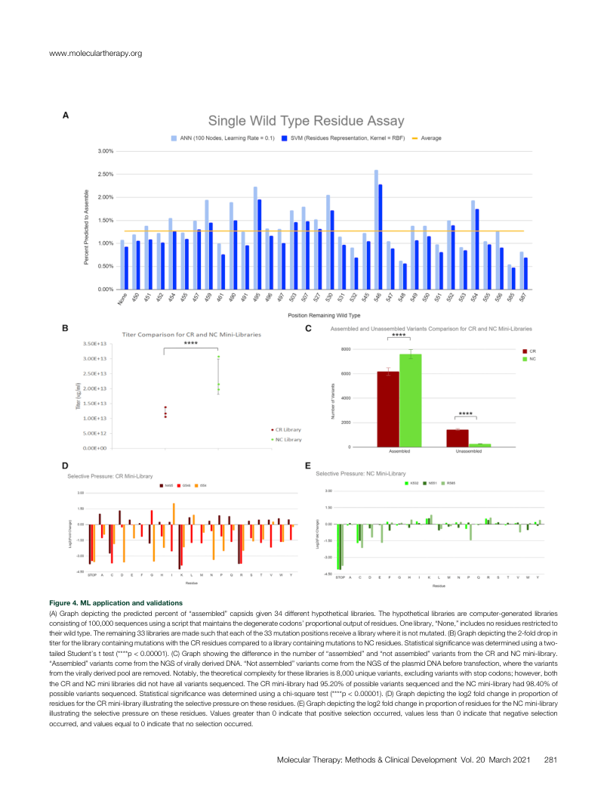
www.moleculartherapy.org
Figure4.MLapplicationandvalidations (A)Graphdepictingthepredictedpercentof“assembled”capsidsgiven34differenthypotheticallibraries.Thehypotheticallibrariesarecomputer-generatedlibraries consistingof100,000sequencesusingascriptthatmaintainsthedegeneratecodons’proportionaloutputofresidues.Onelibrary,“None,”includesnoresiduesrestrictedto theirwildtype.Theremaining33librariesaremadesuchthateachofthe33mutationpositionsreceivealibrarywhereitisnotmutated.(B)Graphdepictingthe2-folddropin titerforthelibrarycontainingmutationswiththeCRresiduescomparedtoalibrarycontainingmutationstoNCresidues.Statisticalsignificancewasdeterminedusingatwo- tailedStudent’sttest(****p<0.00001).(C)Graphshowingthedifferenceinthenumberof“assembled”and“notassembled”variantsfromtheCRandNCmini-library. “Assembled”variantscomefromtheNGSofvirallyderivedDNA.“Notassembled”variantscomefromtheNGSoftheplasmidDNAbeforetransfection,wherethevariants fromthevirallyderivedpoolareremoved.Notably,thetheoreticalcomplexityfortheselibrariesis8,000uniquevariants,excludingvariantswithstopcodons;however,both theCRandNCminilibrariesdidnothaveallvariantssequenced.TheCRmini-libraryhad95.20%ofpossiblevariantssequencedandtheNCmini-libraryhad98.40%of possiblevariantssequenced.Statisticalsignificancewasdeterminedusingachi-squaretest(****p<0.00001).(D)Graphdepictingthelog2foldchangeinproportionof residuesfortheCRmini-libraryillustratingtheselectivepressureontheseresidues.(E)Graphdepictingthelog2foldchangeinproportionofresiduesfortheNCmini-library illustratingtheselectivepressureontheseresidues.Valuesgreaterthan0indicatethatpositiveselectionoccurred,valueslessthan0indicatethatnegativeselection occurred,andvaluesequalto0indicatethatnoselectionoccurred. MolecularTherapy:Methods&ClinicalDevelopment Vol.20 March2021 281
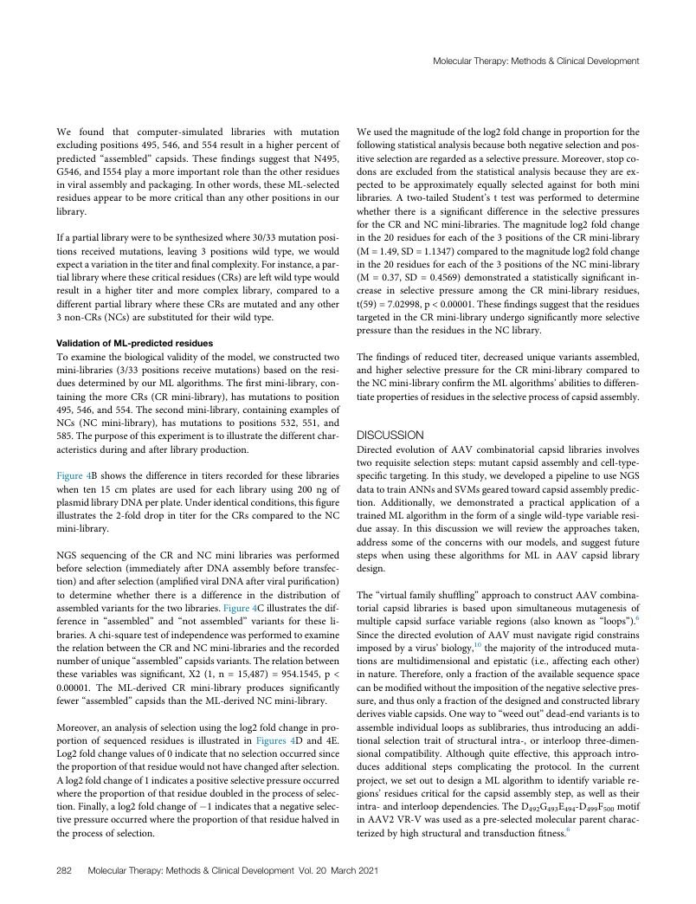
MolecularTherapy:Methods&ClinicalDevelopment
We found that computer-simulated libraries with mutation Weusedthemagnitudeofthelog2foldchangeinproportionforthe excludingpositions495,546,and554resultinahigherpercentof followingstatisticalanalysisbecausebothnegativeselectionandpos- predicted “assembled” capsids. These findings suggest that N495, itiveselectionareregardedasaselectivepressure.Moreover,stopco- G546,andI554playamoreimportantrolethantheotherresidues dons are excluded from the statistical analysis because they are ex- inviralassemblyandpackaging.Inotherwords,theseML-selected pected to be approximately equally selected against for both mini residuesappeartobemorecriticalthananyotherpositionsinour libraries. A two-tailed Student’s t test was performed to determine library. whether there is a significant difference in the selective pressures fortheCRandNCmini-libraries.Themagnitudelog2foldchange Ifapartiallibraryweretobesynthesizedwhere30/33mutationposi- inthe20residuesforeachofthe3positionsoftheCRmini-library tions received mutations, leaving 3 positions wild type, we would (M=1.49,SD=1.1347)comparedtothemagnitudelog2foldchange expectavariationinthetiterandfinalcomplexity.Forinstance,apar- inthe20residuesforeachofthe3positionsoftheNCmini-library tiallibrarywherethesecriticalresidues(CRs)areleftwildtypewould (M=0.37,SD=0.4569)demonstrated astatisticallysignificantin- result in a higher titer and more complex library, compared to a crease in selective pressure among the CR mini-library residues, differentpartiallibrarywheretheseCRsaremutatedandanyother t(59)=7.02998,p<0.00001.Thesefindingssuggestthattheresidues 3non-CRs(NCs)aresubstitutedfortheirwildtype. targetedintheCRmini-libraryundergosignificantlymoreselective pressurethantheresiduesintheNClibrary. ValidationofML-predictedresidues Toexaminethebiologicalvalidityofthemodel,weconstructedtwo Thefindingsofreducedtiter,decreaseduniquevariantsassembled, mini-libraries (3/33 positions receive mutations) based on the resi- and higher selective pressure for the CR mini-library compared to duesdeterminedbyourMLalgorithms.Thefirstmini-library,con- theNCmini-libraryconfirmtheMLalgorithms’abilitiestodifferen- taining the more CRs (CR mini-library), has mutations to position tiatepropertiesofresiduesintheselectiveprocessofcapsidassembly. 495,546,and554.Thesecondmini-library,containingexamplesof NCs (NC mini-library), has mutations to positions 532, 551, and 585.Thepurposeofthisexperimentistoillustratethedifferentchar- DISCUSSION acteristicsduringandafterlibraryproduction. Directed evolution of AAV combinatorial capsid libraries involves tworequisiteselectionsteps:mutantcapsidassemblyandcell-type- Figure 4B shows the difference in titers recorded for these libraries specifictargeting.Inthisstudy,wedevelopedapipelinetouseNGS when ten 15 cm plates are used for each library using 200 ng of datatotrainANNsandSVMsgearedtowardcapsidassemblypredic- plasmidlibraryDNAperplate.Underidenticalconditions,thisfigure tion. Additionally, we demonstrated a practical application of a illustrates the2-fold drop in titer for the CRscompared to the NC trainedMLalgorithmintheformofasinglewild-typevariableresi- mini-library. due assay. In this discussion we will review the approaches taken, address some of the concerns with our models, and suggest future NGS sequencing of the CR and NC mini libraries was performed steps when using these algorithms for ML in AAV capsid library before selection (immediately after DNA assembly before transfec- design. tion)andafterselection(amplifiedviralDNAafterviralpurification) to determine whether there is a difference in the distribution of The“virtualfamilyshuffling”approachtoconstructAAVcombina- assembledvariantsforthetwolibraries.Figure4Cillustratesthedif- torial capsid libraries is based upon simultaneous mutagenesis of ference in “assembled” and “not assembled” variants for these li- multiple capsid surface variable regions (also known as “loops”).6 braries.Achi-squaretestofindependencewasperformedtoexamine SincethedirectedevolutionofAAVmustnavigaterigidconstrains therelationbetweentheCRandNCmini-librariesandtherecorded imposedbyavirus’biology,10themajorityoftheintroducedmuta- numberofunique“assembled”capsidsvariants.Therelationbetween tions are multidimensional and epistatic (i.e., affecting each other) these variables was significant, X2 (1, n = 15,487) = 954.1545, p < innature.Therefore,onlyafractionoftheavailablesequencespace 0.00001. The ML-derived CR mini-library produces significantly canbemodifiedwithouttheimpositionofthenegativeselectivepres- fewer“assembled”capsidsthantheML-derivedNCmini-library. sure,andthusonlyafractionofthedesignedandconstructedlibrary derivesviablecapsids.Onewayto“weedout”dead-endvariantsisto Moreover,ananalysisofselectionusingthelog2foldchangeinpro- assembleindividualloopsassublibraries,thusintroducinganaddi- portion of sequenced residues is illustrated in Figures 4D and 4E. tional selection trait of structural intra-, or interloop three-dimen- Log2foldchangevaluesof0indicatethatnoselectionoccurredsince sional compatibility. Although quite effective, this approach intro- theproportionofthatresiduewouldnothavechangedafterselection. duces additional steps complicating the protocol. In the current Alog2foldchangeof1indicatesapositiveselectivepressureoccurred project,wesetouttodesignaMLalgorithmtoidentifyvariablere- wheretheproportionofthatresiduedoubledintheprocessofselec- gions’residues criticalforthecapsidassemblystep,aswellastheir tion.Finally,alog2foldchangeof(cid:3)1indicatesthatanegativeselec- intra-andinterloopdependencies.TheD G E -D F motif 492 493 494 499 500 tivepressureoccurredwheretheproportionofthatresiduehalvedin inAAV2VR-Vwasusedasapre-selectedmolecularparentcharac- theprocessofselection. terizedbyhighstructuralandtransductionfitness.6 282 MolecularTherapy:Methods&ClinicalDevelopment Vol.20 March2021
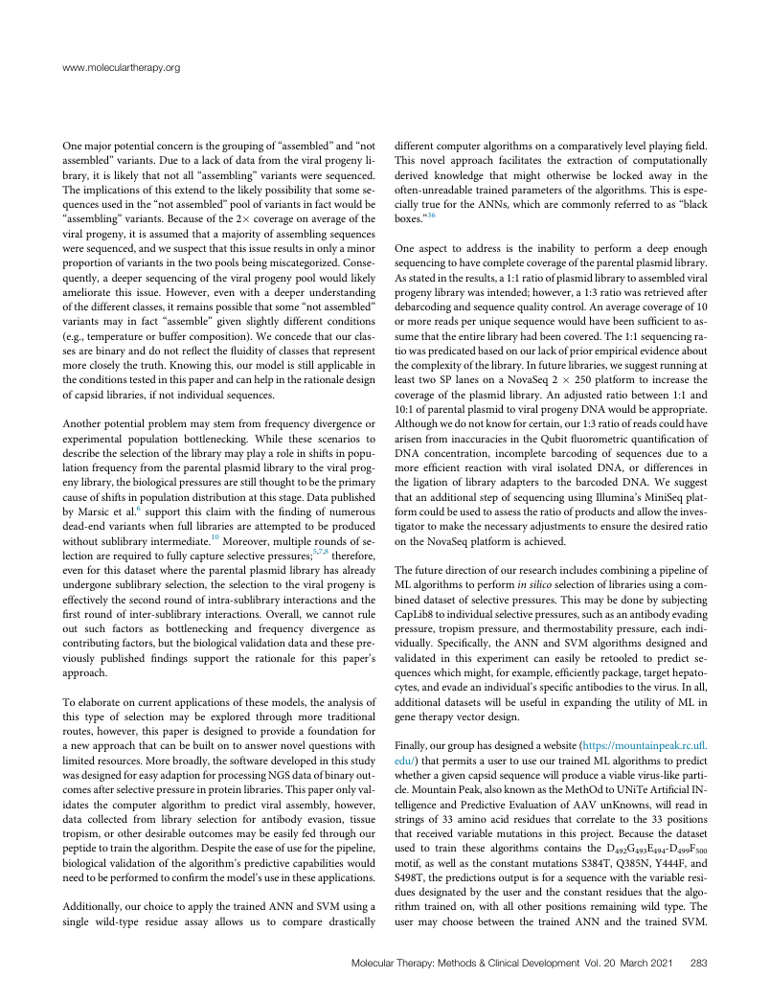
www.moleculartherapy.org
Onemajorpotentialconcernisthegroupingof“assembled”and“not differentcomputeralgorithmsonacomparativelylevelplayingfield. assembled”variants.Duetoalackofdatafromtheviralprogenyli- This novel approach facilitates the extraction of computationally brary,itislikelythatnotall“assembling”variantsweresequenced. derived knowledge that might otherwise be locked away in the Theimplicationsofthisextendtothelikelypossibilitythatsomese- often-unreadabletrainedparametersofthealgorithms.Thisisespe- quencesusedinthe“notassembled”poolofvariantsinfactwouldbe ciallytruefortheANNs,whicharecommonlyreferredtoas“black “assembling”variants.Becauseofthe2(cid:1)coverageonaverageofthe boxes.”36 viralprogeny,itisassumedthatamajorityofassemblingsequences weresequenced,andwesuspectthatthisissueresultsinonlyaminor One aspect to address is the inability to perform a deep enough proportionofvariantsinthetwopoolsbeingmiscategorized.Conse- sequencingtohavecompletecoverageoftheparentalplasmidlibrary. quently,adeepersequencingoftheviralprogenypoolwouldlikely Asstatedintheresults,a1:1ratioofplasmidlibrarytoassembledviral ameliorate this issue. However, even with a deeper understanding progenylibrarywasintended;however,a1:3ratiowasretrievedafter ofthedifferentclasses,itremainspossiblethatsome“notassembled” debarcodingandsequencequalitycontrol.Anaveragecoverageof10 variants may in fact “assemble” given slightly different conditions ormorereadsperuniquesequencewouldhavebeensufficienttoas- (e.g.,temperatureorbuffercomposition).Weconcedethatourclas- sumethattheentirelibraryhadbeencovered.The1:1sequencingra- sesarebinaryanddonotreflectthefluidityofclassesthatrepresent tiowaspredicatedbasedonourlackofpriorempiricalevidenceabout morecloselythetruth.Knowingthis,ourmodelisstillapplicablein thecomplexityofthelibrary.Infuturelibraries,wesuggestrunningat theconditionstestedinthispaperandcanhelpintherationaledesign least two SP lanes on a NovaSeq 2 (cid:1) 250 platform to increase the ofcapsidlibraries,ifnotindividualsequences. coverage of the plasmid library. An adjusted ratio between 1:1 and 10:1ofparentalplasmidtoviralprogenyDNAwouldbeappropriate. Anotherpotentialproblemmaystemfromfrequencydivergenceor Althoughwedonotknowforcertain,our1:3ratioofreadscouldhave experimental population bottlenecking. While these scenarios to arisenfrominaccuraciesintheQubitfluorometricquantificationof describetheselectionofthelibrarymayplayaroleinshiftsinpopu- DNA concentration, incomplete barcoding of sequences due to a lationfrequencyfromtheparentalplasmidlibrarytotheviralprog- more efficient reaction with viral isolated DNA, or differences in enylibrary,thebiologicalpressuresarestillthoughttobetheprimary the ligation of library adapters to the barcoded DNA. We suggest causeofshiftsinpopulationdistributionatthisstage.Datapublished thatanadditionalstepofsequencingusingIllumina’sMiniSeqplat- by Marsic et al.6 support this claim with the finding of numerous formcouldbeusedtoassesstheratioofproductsandallowtheinves- dead-end variantswhenfull librariesareattempted to beproduced tigatortomakethenecessaryadjustmentstoensurethedesiredratio withoutsublibraryintermediate.10Moreover,multipleroundsofse- ontheNovaSeqplatformisachieved. lectionarerequiredtofullycaptureselectivepressures;5,7,8therefore, evenforthisdatasetwheretheparentalplasmidlibraryhasalready Thefuturedirectionofourresearchincludescombiningapipelineof undergonesublibraryselection,theselectiontotheviralprogenyis MLalgorithmstoperforminsilicoselectionoflibrariesusingacom- effectivelythesecondroundofintra-sublibraryinteractionsandthe bineddatasetofselectivepressures.Thismaybedonebysubjecting first round of inter-sublibrary interactions. Overall, we cannot rule CapLib8toindividualselectivepressures,suchasanantibodyevading out such factors as bottlenecking and frequency divergence as pressure,tropismpressure,andthermostabilitypressure,eachindi- contributingfactors,butthebiologicalvalidationdataandthesepre- vidually. Specifically, the ANN and SVM algorithms designed and viously published findings support the rationale for this paper’s validated in this experiment can easily be retooled to predict se- approach. quenceswhichmight,forexample,efficientlypackage,targethepato- cytes,andevadeanindividual’sspecificantibodiestothevirus.Inall, Toelaborateoncurrentapplicationsofthesemodels,theanalysisof additional datasets will be useful in expanding the utility of ML in this type of selection may be explored through more traditional genetherapyvectordesign. routes, however, this paper is designed to provide a foundation for anewapproachthatcanbebuiltontoanswernovelquestionswith Finally,ourgrouphasdesignedawebsite(https://mountainpeak.rc.ufl. limitedresources.Morebroadly,thesoftwaredevelopedinthisstudy edu/)thatpermitsausertouseourtrainedMLalgorithmstopredict wasdesignedforeasyadaptionforprocessingNGSdataofbinaryout- whetheragivencapsidsequencewillproduceaviablevirus-likeparti- comesafterselectivepressureinproteinlibraries.Thispaperonlyval- cle.MountainPeak,alsoknownastheMethOdtoUNiTeArtificialIN- idates the computer algorithm to predict viral assembly, however, telligenceandPredictiveEvaluationofAAVunKnowns,willreadin data collected from library selection for antibody evasion, tissue strings of 33 amino acid residues that correlate to the 33 positions tropism,orotherdesirableoutcomesmaybeeasilyfedthroughour that received variable mutations in this project. Because the dataset peptidetotrainthealgorithm.Despitetheeaseofuseforthepipeline, used to train these algorithms contains the D G E -D F 492 493 494 499 500 biologicalvalidationofthealgorithm’spredictivecapabilitieswould motif,as wellastheconstantmutationsS384T,Q385N,Y444F,and needtobeperformedtoconfirmthemodel’suseintheseapplications. S498T,thepredictionsoutputisforasequencewiththevariableresi- duesdesignatedbythe userandtheconstantresiduesthatthealgo- Additionally,ourchoicetoapplythetrainedANNandSVMusinga rithm trained on, with all other positions remaining wild type. The single wild-type residue assay allows us to compare drastically user may choose between the trained ANN and the trained SVM. MolecularTherapy:Methods&ClinicalDevelopment Vol.20 March2021 283
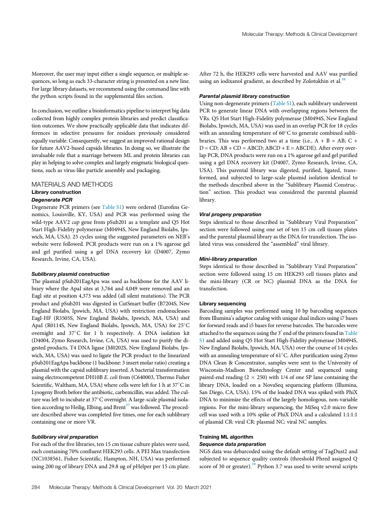
MolecularTherapy:Methods&ClinicalDevelopment
Moreover,theusermayinputeitherasinglesequence,ormultiplese- After72h,theHEK293cellswereharvestedandAAVwaspurified quences,solongaseach33-characterstringispresentedonanewline. usinganiodixanolgradient,asdescribedbyZolotukhinetal.38 Forlargelibrarydatasets,werecommendusingthecommandlinewith thepythonscriptsfoundinthesupplementalfilessection. Parentalplasmidlibraryconstruction Usingnon-degenerateprimers(TableS1),eachsublibraryunderwent Inconclusion,weoutlineabioinformaticspipelinetointerpretbigdata PCR togenerate linear DNAwith overlappingregionsbetween the collectedfromhighlycomplexproteinlibrariesandpredictclassifica- VRs.Q5HotStartHigh-Fidelitypolymerase(M0494S,NewEngland tionoutcomes.Weshowpracticallyapplicabledatathatindicatesdif- Biolabs,Ipswich,MA,USA)wasusedinanoverlapPCRfor18cycles ferences in selective pressures for residues previously considered withanannealingtemperatureof60(cid:4)Ctogeneratecombinedsubli- equallyvariable.Consequently,wesuggestanimprovedrationaldesign braries. This was performed two at a time (i.e., A + B = AB; C + forfutureAAV2-basedcapsidslibraries.Indoingso,weillustratethe D=CD;AB+CD=ABCD;ABCD+E=ABCDE).Aftereveryover- invaluablerolethatamarriagebetweenMLandproteinlibrariescan lapPCR,DNAproductswererunona1%agarosegelandgelpurified playinhelpingtosolvecomplexandlargelyenigmaticbiologicalques- using a gel DNA recovery kit (D4007, Zymo Research, Irvine, CA, tions,suchasvirus-likeparticleassemblyandpackaging. USA). This parental library was digested, purified, ligated, trans- formed, and subjected to large-scale plasmid isolation identical to MATERIALSANDMETHODS the methods described above in the “Sublibrary Plasmid Construc- Libraryconstruction tion” section. This product was considered the parental plasmid DegeneratePCR library. DegeneratePCRprimers(seeTableS1)wereordered(EurofinsGe- nomics, Louisville, KY, USA) and PCR was performed using the Viralprogenypreparation wild-typeAAV2capgenefrompSub201asatemplateandQ5Hot Steps identical to those described in “Sublibrary Viral Preparation” StartHigh-Fidelitypolymerase(M0494S,NewEnglandBiolabs,Ips- section were followed using one set of ten 15 cm cell tissues plates wich,MA,USA).25cyclesusingthesuggestedparametersonNEB’s andtheparentalplasmidlibraryastheDNAfortransfection.Theiso- websitewerefollowed.PCRproductswererunona1%agarosegel latedviruswasconsideredthe“assembled”virallibrary. and gel purified using a gel DNA recovery kit (D4007, Zymo Research,Irvine,CA,USA). Mini-librarypreparation Steps identical to those described in “Sublibrary Viral Preparation” Sublibraryplasmidconstruction section were followed using 15 cm HEK293 cell tissues plates and TheplasmidpSub201EagApawasusedasbackbonefortheAAVli- the mini-library (CR or NC) plasmid DNA as the DNA for brarywheretheApaIsitesat3,764and4,049wereremovedandan transfection. EagIsiteatposition4,373wasadded(allsilentmutations).ThePCR productandpSub201wasdigestedinCutSmartbuffer(B7204S,New Librarysequencing England Biolabs, Ipswich, MA, USA) with restriction endonucleases Barcoding samples was performed using 10 bp barcoding sequences EagI-HF (R3505S, New England Biolabs, Ipswich, MA, USA) and fromIllumina’sadaptorcatalogwithuniquedualindicesusingi7bases ApaI (R0114S, New England Biolabs, Ipswich, MA, USA) for 25(cid:4)C forforwardreadsandi5basesforreversebarcodes.Thebarcodeswere overnight and 37(cid:4)C for 1 h respectively. A DNA isolation kit attachedtothesequencesusingthe30endoftheprimersfoundinTable (D4004,ZymoResearch,Irvine,CA,USA)wasusedtopurifythedi- S1andaddedusingQ5HotStartHigh-Fidelitypolymerase(M0494S, gestedproducts.T4DNAligase(M0202S,NewEnglandBiolabs,Ips- NewEnglandBiolabs,Ipswich,MA,USA)overthecourseof14cycles wich,MA,USA)wasusedtoligatethePCRproducttothelinearized withanannealingtemperatureof61(cid:4)C.AfterpurificationusingZymo pSub201EagApabackbone(1backbone:3insertmolarratio)creatinga DNA Clean & Concentrator,samples were senttothe Universityof plasmidwiththecapsidsublibraryinserted.Abacterialtransformation Wisconsin-Madison Biotechnology Center and sequenced using usingelectrocompetentDH10BE.colifrom(C640003,ThermoFisher paired-endreading(2(cid:1)250)with1/4ofoneSPlanecontainingthe Scientific,Waltham,MA,USA)wherecellswereleftfor1hat37(cid:4)Cin library DNA, loaded on a NovaSeq sequencing platform (Illumina, LysogenyBrothbeforetheantibiotic,carbenicillin,wasadded.Thecul- SanDiego,CA,USA).15%oftheloadedDNAwasspikedwithPhiX turewaslefttoincubateat37(cid:4)Covernight.Alarge-scaleplasmidisola- DNAtominimizetheeffectsofthelargelyhomologous,non-variable tionaccordingtoHeilig,Elbing,andBrent37wasfollowed.Theproced- regions.Forthe mini-librarysequencing,the MiSeqv2.0micro flow uredescribedabovewascompletedfivetimes,oneforeachsublibrary cellwasusedwitha10%spikeofPhiXDNAandacalculated1:1:1:1 containingoneormoreVR. ofplasmidCR:viralCR:plasmidNC:viralNCsamples. Sublibraryviralpreparation TrainingMLalgorithm Foreachofthefivelibraries,ten15cmtissuecultureplateswereused, Sequencedatapreparation eachcontaining70%confluentHEK293cells.APEIMaxtransfection NGSdatawasdebarcodedusingthedefaultsettingofTagDust2and (NC1038561,FisherScientific,Hampton,NH,USA)wasperformed subjectedtosequencequalitycontrols(thresholdPhredassignedQ using200ngoflibraryDNAand29.8ugofpHelperper15cmplate. scoreof30orgreater).39Python3.7wasusedtowriteseveralscripts 284 MolecularTherapy:Methods&ClinicalDevelopment Vol.20 March2021
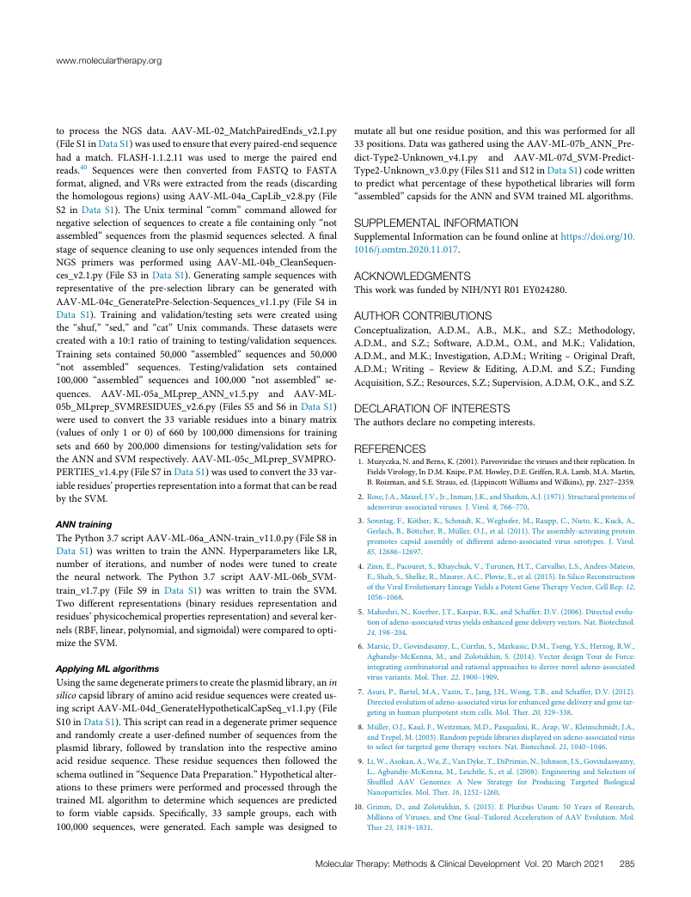
www.moleculartherapy.org
to process the NGS data. AAV-ML-02_MatchPairedEnds_v2.1.py mutate all but one residue position, and this was performed for all (FileS1inDataS1)wasusedtoensurethateverypaired-endsequence 33positions.DatawasgatheredusingtheAAV-ML-07b_ANN_Pre- had a match. FLASH-1.1.2.11 was used to merge the paired end dict-Type2-Unknown_v4.1.py and AAV-ML-07d_SVM-Predict- reads.40 Sequences were then converted from FASTQ to FASTA Type2-Unknown_v3.0.py(FilesS11andS12inDataS1)codewritten format,aligned,andVRswereextractedfromthereads(discarding to predict what percentage of these hypothetical libraries will form thehomologousregions)usingAAV-ML-04a_CapLib_v2.8.py(File “assembled”capsidsfortheANNandSVMtrainedMLalgorithms. S2 in Data S1). The Unix terminal “comm” command allowed for negative selectionofsequencestocreateafilecontainingonly“not SUPPLEMENTALINFORMATION assembled” sequences from the plasmid sequences selected. A final SupplementalInformationcanbefoundonlineathttps://doi.org/10. stageofsequencecleaningtouseonlysequencesintendedfromthe 1016/j.omtm.2020.11.017. NGS primers was performed using AAV-ML-04b_CleanSequen- ces_v2.1.py(FileS3inDataS1).Generatingsamplesequenceswith ACKNOWLEDGMENTS representative of the pre-selection library can be generated with ThisworkwasfundedbyNIH/NYIR01EY024280. AAV-ML-04c_GeneratePre-Selection-Sequences_v1.1.py (File S4 in Data S1). Training and validation/testing sets were created using AUTHORCONTRIBUTIONS the “shuf,” “sed,” and “cat” Unix commands. These datasets were Conceptualization, A.D.M., A.B., M.K., and S.Z.; Methodology, createdwitha10:1ratiooftrainingtotesting/validationsequences. A.D.M., and S.Z.; Software, A.D.M., O.M., and M.K.; Validation, Training sets contained 50,000 “assembled” sequences and 50,000 A.D.M.,andM.K.;Investigation,A.D.M.;Writing–OriginalDraft, “not assembled” sequences. Testing/validation sets contained A.D.M.; Writing – Review & Editing, A.D.M. and S.Z.; Funding 100,000 “assembled” sequences and 100,000 “not assembled” se- Acquisition,S.Z.;Resources,S.Z.;Supervision,A.D.M,O.K.,andS.Z. quences. AAV-ML-05a_MLprep_ANN_v1.5.py and AAV-ML- 05b_MLprep_SVMRESIDUES_v2.6.py(FilesS5andS6inDataS1) DECLARATIONOFINTERESTS were used to convert the 33 variable residues into a binary matrix Theauthorsdeclarenocompetinginterests. (values of only 1 or 0) of 660 by 100,000 dimensions for training sets and 660 by 200,000 dimensions for testing/validation sets for REFERENCES theANNandSVMrespectively.AAV-ML-05c_MLprep_SVMPRO- 1. Muzyczka,N.andBerns,K.(2001).Parvoviridae:thevirusesandtheirreplication.In PERTIES_v1.4.py(FileS7inDataS1)wasusedtoconvertthe33var- FieldsVirology,InD.M.Knipe,P.M.Howley,D.E.Griffen,R.A.Lamb,M.A.Martin, iableresidues’propertiesrepresentationintoaformatthatcanberead B.Roizman,andS.E.Straus,ed.(LippincottWilliamsandWilkins),pp.2327–2359. bytheSVM. 2. Rose,J.A.,Maizel,J.V.,Jr.,Inman,J.K.,andShatkin,A.J.(1971).Structuralproteinsof adenovirus-associatedviruses.J.Virol.8,766–770. ANNtraining 3. Sonntag,F.,Köther,K.,Schmidt,K.,Weghofer,M.,Raupp,C.,Nieto,K.,Kuck,A., Gerlach,B.,Böttcher,B.,Müller,O.J.,etal.(2011).Theassembly-activatingprotein ThePython3.7scriptAAV-ML-06a_ANN-train_v11.0.py(FileS8in promotes capsid assembly of different adeno-associatedvirus serotypes. J. Virol. Data S1) was written to train the ANN. Hyperparameters like LR, 85,12686–12697. number of iterations, and number of nodes were tuned to create 4. Zinn,E.,Pacouret,S.,Khaychuk,V.,Turunen,H.T.,Carvalho,L.S.,Andres-Mateos, the neural network. The Python 3.7 script AAV-ML-06b_SVM- E.,Shah,S.,Shelke,R.,Maurer,A.C.,Plovie,E.,etal.(2015).InSilicoReconstruction train_v1.7.py (File S9 in Data S1) was written to train the SVM. oftheViralEvolutionaryLineageYieldsaPotentGeneTherapyVector.CellRep.12, 1056–1068. Two different representations (binary residues representation and residues’physicochemicalpropertiesrepresentation)andseveralker- 5. Maheshri,N.,Koerber,J.T.,Kaspar,B.K.,andSchaffer,D.V.(2006).Directedevolu- tionofadeno-associatedvirusyieldsenhancedgenedeliveryvectors.Nat.Biotechnol. nels(RBF,linear,polynomial,andsigmoidal)werecomparedtoopti- 24,198–204. mizetheSVM. 6. Marsic,D.,Govindasamy,L.,Currlin,S.,Markusic,D.M.,Tseng,Y.S.,Herzog,R.W., Agbandje-McKenna,M.,andZolotukhin,S.(2014).VectordesignTourdeForce: ApplyingMLalgorithms integratingcombinatorialandrationalapproachestoderivenoveladeno-associated Usingthesamedegenerateprimerstocreatetheplasmidlibrary,anin virusvariants.Mol.Ther.22,1900–1909. silicocapsidlibraryofaminoacidresiduesequenceswerecreatedus- 7. Asuri,P.,Bartel,M.A.,Vazin,T.,Jang,J.H.,Wong,T.B.,andSchaffer,D.V.(2012). Directedevolutionofadeno-associatedvirusforenhancedgenedeliveryandgenetar- ingscriptAAV-ML-04d_GenerateHypotheticalCapSeq_v1.1.py(File getinginhumanpluripotentstemcells.Mol.Ther.20,329–338. S10inDataS1).Thisscriptcanreadinadegenerateprimersequence 8. Müller,O.J.,Kaul,F.,Weitzman,M.D.,Pasqualini,R.,Arap,W.,Kleinschmidt,J.A., and randomly create a user-defined number of sequences from the andTrepel,M.(2003).Randompeptidelibrariesdisplayedonadeno-associatedvirus plasmid library, followed by translation into the respective amino toselectfortargetedgenetherapyvectors.Nat.Biotechnol.21,1040–1046. acid residue sequence. These residue sequences then followed the 9. Li,W.,Asokan,A.,Wu,Z.,VanDyke,T.,DiPrimio,N.,Johnson,J.S.,Govindaswamy, schemaoutlinedin“SequenceDataPreparation.”Hypotheticalalter- L.,Agbandje-McKenna,M.,Leichtle,S.,etal.(2008).EngineeringandSelectionof Shuffled AAV Genomes: A New Strategy for Producing Targeted Biological ations to these primers were performed and processed through the Nanoparticles.Mol.Ther.16,1252–1260. trained ML algorithm to determine which sequences are predicted to form viable capsids. Specifically, 33 sample groups, each with 10. G M r i i l m lio m ns ,D of ., V a i n ru d se Z s o , l a o n tu d k O hi n n e , G S. o ( a 2 l– 0 T 15 a ) i . lo E red Pl A ur c i c b e u le s ra U ti n o u n m o : f 5 A 0 A Y V ea E rs vo o lu f t R io e n s . ea M rc o h l , . 100,000 sequences, were generated. Each sample was designed to Ther23,1819–1831. MolecularTherapy:Methods&ClinicalDevelopment Vol.20 March2021 285
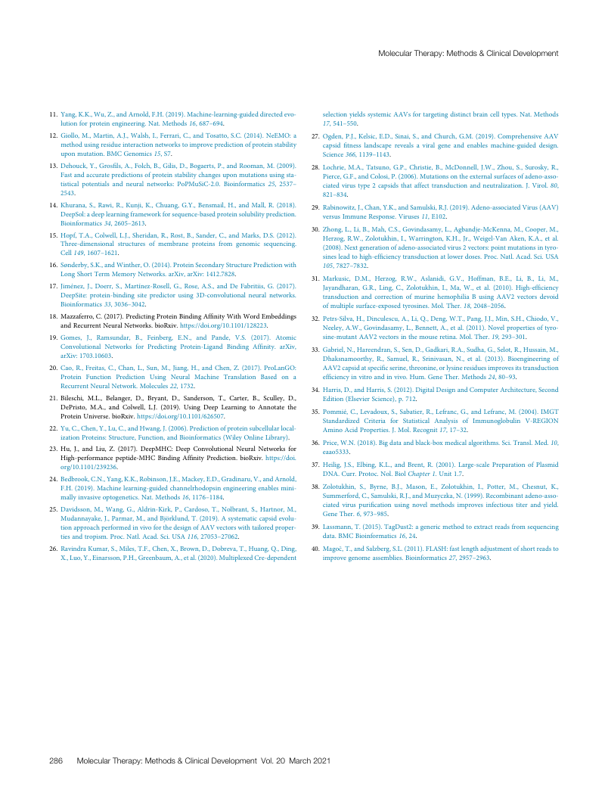
MolecularTherapy:Methods&ClinicalDevelopment
11.Yang,K.K.,Wu,Z.,andArnold,F.H.(2019).Machine-learning-guideddirectedevo- selectionyieldssystemicAAVsfortargetingdistinctbraincelltypes.Nat.Methods lutionforproteinengineering.Nat.Methods16,687–694. 17,541–550. 12.Giollo,M.,Martin,A.J.,Walsh,I.,Ferrari,C.,andTosatto,S.C.(2014).NeEMO:a 27. Ogden,P.J.,Kelsic,E.D.,Sinai,S.,andChurch,G.M.(2019).ComprehensiveAAV methodusingresidueinteractionnetworkstoimprovepredictionofproteinstability capsidfitnesslandscaperevealsaviralgeneandenablesmachine-guideddesign. uponmutation.BMCGenomics15,S7. Science366,1139–1143. 13.Dehouck,Y.,Grosfils,A.,Folch,B.,Gilis,D.,Bogaerts,P.,andRooman,M.(2009). 28. Lochrie,M.A.,Tatsuno,G.P.,Christie,B.,McDonnell,J.W.,Zhou,S.,Surosky,R., Fastandaccuratepredictionsofproteinstabilitychangesuponmutationsusingsta- Pierce,G.F.,andColosi,P.(2006).Mutationsontheexternalsurfacesofadeno-asso- tistical potentials andneuralnetworks: PoPMuSiC-2.0. Bioinformatics 25, 2537– ciatedvirustype2capsidsthataffecttransductionandneutralization.J.Virol.80, 2543. 821–834. 14.Khurana,S.,Rawi,R.,Kunji,K.,Chuang,G.Y.,Bensmail,H.,andMall,R.(2018). 29. Rabinowitz,J.,Chan,Y.K.,andSamulski,R.J.(2019).Adeno-associatedVirus(AAV) DeepSol:adeeplearningframeworkforsequence-basedproteinsolubilityprediction. versusImmuneResponse.Viruses11,E102. Bioinformatics34,2605–2613. 30. Zhong,L.,Li,B.,Mah,C.S.,Govindasamy,L.,Agbandje-McKenna,M.,Cooper,M., 15.Hopf,T.A.,Colwell,L.J.,Sheridan,R.,Rost,B.,Sander,C.,andMarks,D.S.(2012). Herzog,R.W.,Zolotukhin,I.,Warrington,K.H.,Jr.,Weigel-VanAken,K.A.,etal. Three-dimensional structures of membrane proteins from genomic sequencing. (2008).Nextgenerationofadeno-associatedvirus2vectors:pointmutationsintyro- Cell149,1607–1621. sinesleadtohigh-efficiencytransductionatlowerdoses.Proc.Natl.Acad.Sci.USA 16.Sønderby,S.K.,andWinther,O.(2014).ProteinSecondaryStructurePredictionwith 105,7827–7832. LongShortTermMemoryNetworks.arXiv,arXiv:1412.7828. 31. Markusic, D.M., Herzog, R.W., Aslanidi, G.V., Hoffman, B.E., Li, B., Li, M., 17.Jiménez,J.,Doerr,S.,Martínez-Rosell,G.,Rose,A.S.,andDeFabritiis,G.(2017). Jayandharan,G.R.,Ling,C.,Zolotukhin,I.,Ma,W.,etal.(2010).High-efficiency DeepSite:protein-bindingsitepredictorusing3D-convolutionalneuralnetworks. transductionandcorrectionofmurinehemophiliaBusingAAV2vectorsdevoid Bioinformatics33,3036–3042. ofmultiplesurface-exposedtyrosines.Mol.Ther.18,2048–2056. 18.Mazzaferro,C.(2017).PredictingProteinBindingAffinityWithWordEmbeddings 32. Petrs-Silva,H.,Dinculescu,A.,Li,Q.,Deng,W.T.,Pang,J.J.,Min,S.H.,Chiodo,V., andRecurrentNeuralNetworks.bioRxiv.https://doi.org/10.1101/128223. Neeley,A.W.,Govindasamy,L.,Bennett,A.,etal.(2011).Novelpropertiesoftyro- 19.Gomes, J., Ramsundar, B., Feinberg, E.N., and Pande, V.S. (2017). Atomic sine-mutantAAV2vectorsinthemouseretina.Mol.Ther.19,293–301. Convolutional Networks for Predicting Protein-Ligand Binding Affinity. arXiv, 33. Gabriel,N.,Hareendran,S.,Sen,D.,Gadkari,R.A.,Sudha,G.,Selot,R.,Hussain,M., arXiv:1703.10603. Dhaksnamoorthy,R.,Samuel, R.,Srinivasan,N.,etal.(2013). Bioengineeringof 20.Cao,R.,Freitas,C.,Chan,L.,Sun,M.,Jiang,H.,andChen,Z.(2017).ProLanGO: AAV2capsidatspecificserine,threonine,orlysineresiduesimprovesitstransduction Protein Function Prediction Using Neural Machine Translation Based on a efficiencyinvitroandinvivo.Hum.GeneTher.Methods24,80–93. RecurrentNeuralNetwork.Molecules22,1732. 34. Harris,D.,andHarris,S.(2012).DigitalDesignandComputerArchitecture,Second 21.Bileschi, M.L., Belanger, D., Bryant, D., Sanderson, T., Carter, B., Sculley, D., Edition(ElsevierScience),p.712. DePristo, M.A., and Colwell, L.J. (2019). Using Deep Learning to Annotate the 35. Pommié,C.,Levadoux,S.,Sabatier,R.,Lefranc,G.,andLefranc,M.(2004).IMGT ProteinUniverse.bioRxiv.https://doi.org/10.1101/626507. Standardized Criteria for Statistical Analysis of Immunoglobulin V-REGION 22.Yu,C.,Chen,Y.,Lu,C.,andHwang,J.(2006).Predictionofproteinsubcellularlocal- AminoAcidProperties.J.Mol.Recognit17,17–32. izationProteins:Structure,Function,andBioinformatics(WileyOnlineLibrary). 36. Price,W.N.(2018).Bigdataandblack-boxmedicalalgorithms.Sci.Transl.Med.10, 23.Hu,J.,andLiu,Z.(2017).DeepMHC:DeepConvolutionalNeuralNetworksfor eaao5333. High-performancepeptide-MHCBindingAffinityPrediction.bioRxiv.https://doi. org/10.1101/239236. 37. Heilig,J.S.,Elbing,K.L.,andBrent,R.(2001).Large-scalePreparationofPlasmid DNA.Curr.Protoc.Nol.BiolChapter1.Unit1.7. 24.Bedbrook,C.N.,Yang,K.K.,Robinson,J.E.,Mackey,E.D.,Gradinaru,V.,andArnold, F.H.(2019).Machinelearning-guidedchannelrhodopsinengineeringenablesmini- 38. Zolotukhin, S., Byrne, B.J., Mason, E., Zolotukhin, I., Potter, M., Chesnut, K., mallyinvasiveoptogenetics.Nat.Methods16,1176–1184. Summerford,C.,Samulski,R.J.,andMuzyczka,N.(1999).Recombinantadeno-asso- ciatedviruspurificationusingnovelmethodsimprovesinfectioustiterandyield. 25.Davidsson,M.,Wang,G.,Aldrin-Kirk,P.,Cardoso,T.,Nolbrant,S.,Hartnor,M., GeneTher.6,973–985. Mudannayake,J.,Parmar,M.,andBjörklund,T.(2019).Asystematiccapsidevolu- tionapproachperformedinvivoforthedesignofAAVvectorswithtailoredproper- 39. Lassmann,T.(2015).TagDust2:agenericmethodtoextractreadsfromsequencing tiesandtropism.Proc.Natl.Acad.Sci.USA116,27053–27062. data.BMCBioinformatics16,24. 26.RavindraKumar,S.,Miles,T.F.,Chen,X.,Brown,D.,Dobreva,T.,Huang,Q.,Ding, 40. Mago(cid:1)c,T.,andSalzberg,S.L.(2011).FLASH:fastlengthadjustmentofshortreadsto X.,Luo,Y.,Einarsson,P.H.,Greenbaum,A.,etal.(2020).MultiplexedCre-dependent improvegenomeassemblies.Bioinformatics27,2957–2963. 286 MolecularTherapy:Methods&ClinicalDevelopment Vol.20 March2021